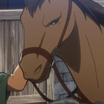

Fauna
Mico-leão-dourado
Mico-leão-dourado
Embora a ampla quantidade de espécie animal, a mais conhecida é com certeza o mico-leão-dourado, espécie hoje considerada símbolo desse bioma.

Especies
Especies
Além do Mico podemos destacar outras espécies que habitam a mata, como sapo-pingo-de-ouro, porcodo- mato, macaco-guicó, pintor-verdadeiro, macuco, onça-pintada, harpia, tucano, papagaio-de-cararoxa, musiquinha e sabiá-laranjeira.
Flora
Pau-Brasil
Pau-Brasil
Dentre as vinte mil espécies de plantas presentes na mata, 8 mil delas são endêmicas, encontradas apenas aqui como o pau Brasil que deu nome ao nosso país.

Frutas
Frutas
A flora também inclui frutas como jabuticaba, pitanga, uvaia e araçá são nativas e consumidas localmente, enquanto plantas como a erva-mate têm grande importância cultural e econômica, principalmente no Sul do país